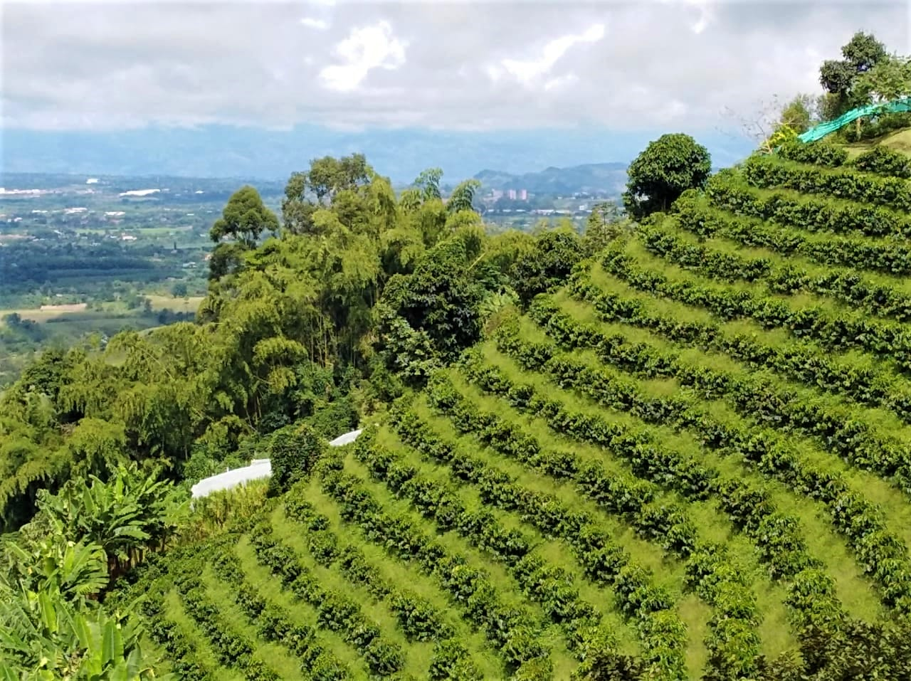
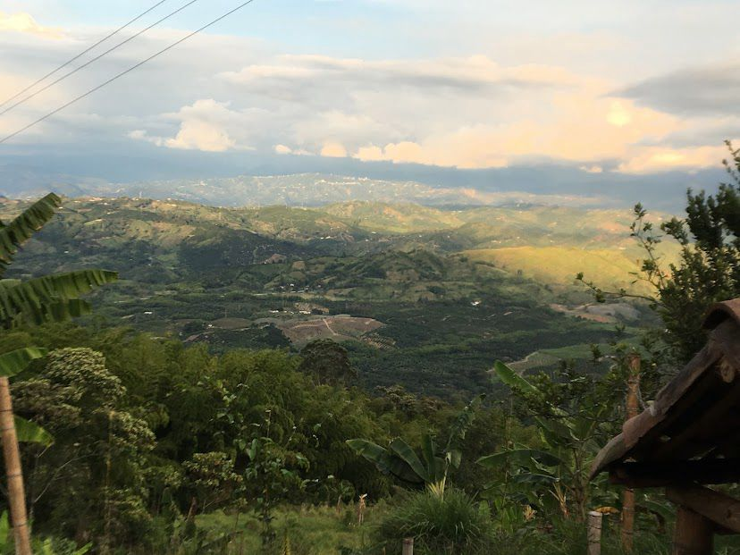
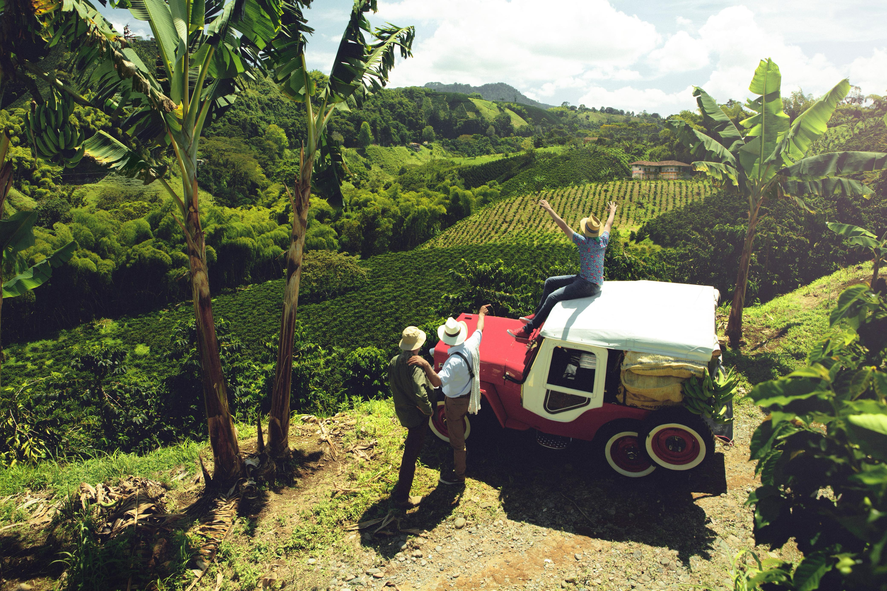
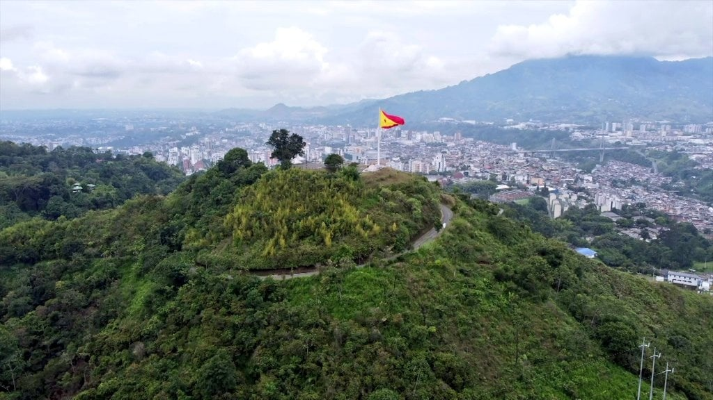

La Divisa De Don Juan
Vía Altagracia, Altagracia, Pereira, Risaralda

Tambo El Privilegio
Santa Rosa De Cabal (Risaralda)

Café De Leo
Santa Rosa De Cabal (Risaralda)

Café Hacienda Horizontes
Marsella (Risaralda)

Café Don Manolo
Vereda El Estanquillo-Dosquebradas (Risaralda)

Mirador de Altagracia
Altagracia-Pereira (Risaralda)

Cerro Canceles
Las Brisas-Pereira (Risaralda).